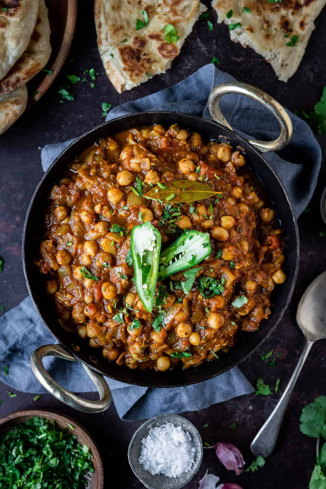

Chana Masala
A classic chickpea curry topped with fresh chile peppers and cilantro,
served with basmati rice and naan bread.
Ingredients
- 4 cloves of garlic, roughly chopped
- 1 (1-inch) knob of ginger, roughly chopped
- 1 to 6 green Thai chiles, roughly chopped
- 2 tablespoons of lemon juice, divided
- Kosher salt
- 2 tablespoons oil or ghee
- 2 teaspoons black mustard seeds
- 1 teaspoon whole cumin seeds
- 1 large onion, finely diced
- 1/4 teaspoon baking soda
- 2 teaspoons ground coriander
- 1/2 teaspoon freshly ground black pepper
- 1/2 teaspoon ground tumeric
- 1 1/2 teaspoons garam masala
- 1 (14 ounce) can whole peeled tomatoes
- 2 (14 ounce) cans chickpeas, drained and rinsed
- 1 cup cilantro leaves, roughly chopped
Directions
- Combine garlic, ginger, chiles, 1 tablespoon lemon juice, and 1/2 teaspoon kosher salt in a mortar and pestle or in the small work bowl of a food processor and pound or process until a fine paste is produced. Set aside.
- Heat oil or ghee in a large saucepan or Dutch oven over medium-high heat until shimmering. All at once, add mustard seeds and cumin. They will sputter and spit for a few seconds. As soon as they are aromatic (about 15 seconds), add onion all at once, along with baking soda. Cook, stirring frequently, until onions start to leave a brown coating on bottom of pan, 3 to 4 minutes. Add 1 tablespoon water, scrape up browned bits from pan, and continue cooking. Repeat this process until onions are a deep brown, about 10 minutes total.
- Immediately add garlic/ginger/chile paste all at once and stir to combine. Add coriander, black pepper, turmeric, and 1 teaspoon garam masala. Stir until fragrant, about 30 seconds. Add tomatoes and crush them using a whisk or potato masher. Add drained, rinsed chickpeas and cilantro, reserving a little cilantro for garnish. Add 1/2 cup water.
- Bring to a simmer, cover with lid slightly cracked, and reduce heat to maintain a gentle bubbling. Cook, stirring occasionally, until liquid has reduced into a thick stew and spices have melded, about 30 minutes.
- Stir in remaining garam masala and lemon juice. Season to taste with salt. Serve with rice and/or naan, sprinkling additional cilantro on top.